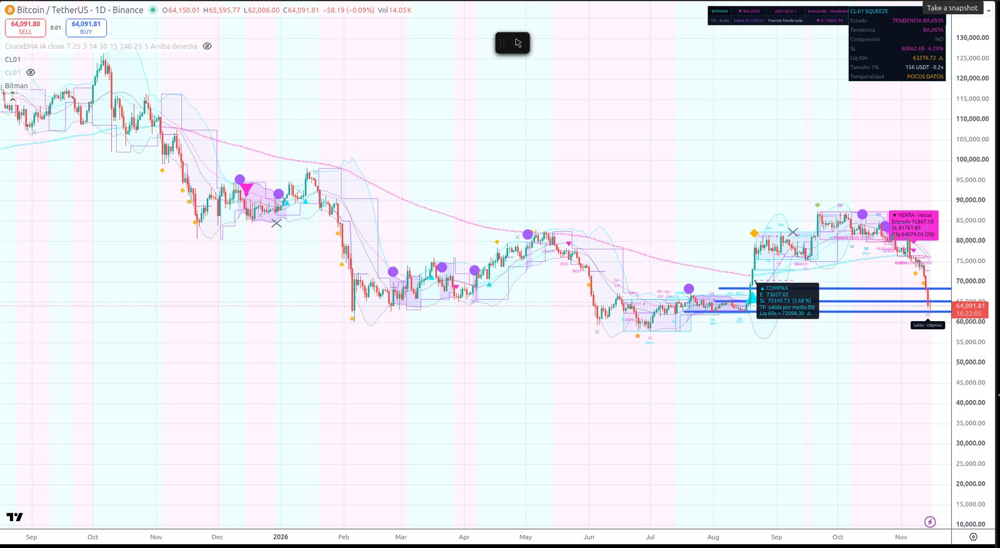
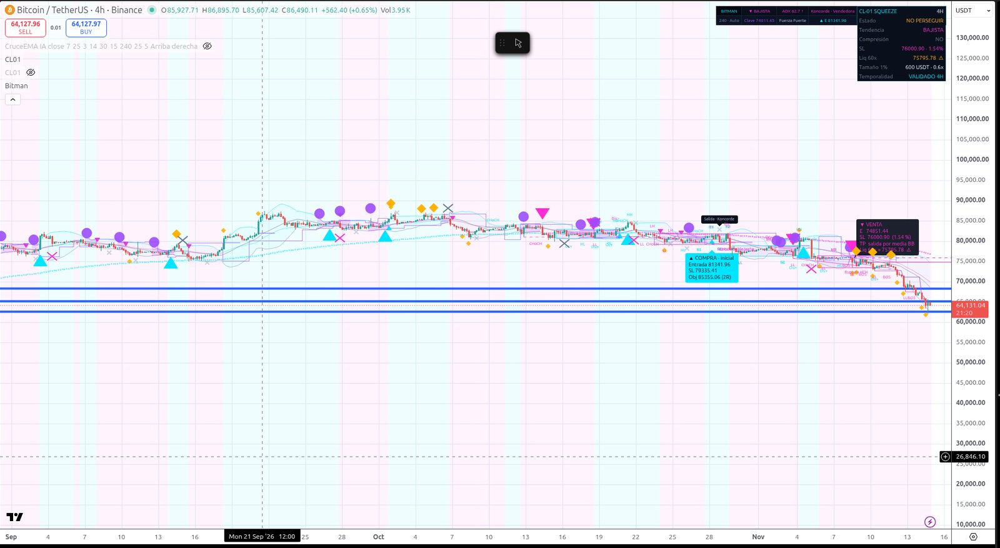
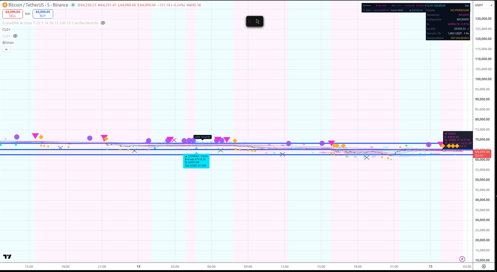
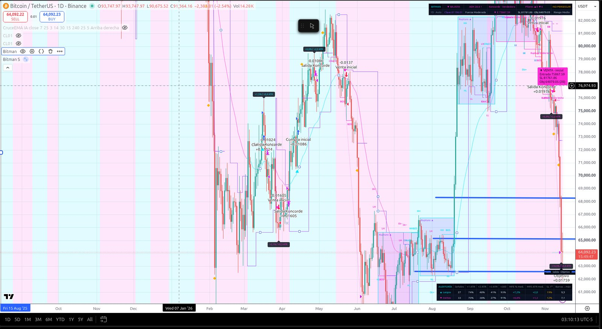
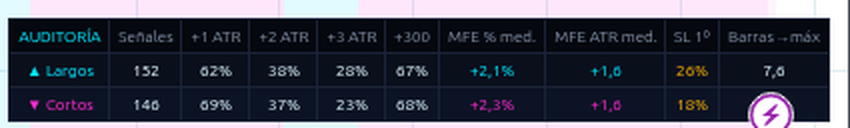

Read the structure.
Enter on the pullback.
Bitman combines market structure, four confirmation pillars and impulse → pullback timing. Every signal comes with an entry, a structural stop and a target, on any timeframe.

How it works
Fixed rules, evaluated on confirmed bar closes.
1 · Structure
HH/HL/LH/LL swings, BOS and CHoCH, range boxes, H&S and inverse H&S, double tops and bottoms, supply and demand zones. The last event sets the bias.
2 · Four pillars
RSI, Awesome Oscillator, ADX/DI and a simplified Koncorde. A signal needs the structure in favour and at least 3 of 4 pillars.
3 · Impulse → pullback
An impulse breaks a level. If price is extended, an amber diamond says do not chase; Bitman waits for the pullback and the resumption close.
4 · Declared stop rules
Structural SL plus a 0.25 ATR buffer, never closer than 0.5 ATR. If it needs more than 4 ATR there is no signal: the stop is never shortened.
5 · Every timeframe
Structure and timing parameters adapt automatically from 1 minute to monthly. Signals on confirmed closes with confirmed pivots: no repainting.
6 · Signal audit
Optional table that measures how far price travelled after each past signal (+1/+2/+3 ATR, MFE, SL first). It does not change signals.
Real charts
Real TradingView captures of the development build (Spanish interface). Other scripts (CL-01, CrucEMA) were also on the chart, so it looks busier than Bitman alone. The commercial version defaults to English.



Signal audit: did the move happen?
Share of signals whose maximum favourable travel, within the next 20 closed bars measured from the signal close, reached each level. Author's run with default settings on Binance BTCUSDT and ETHUSDT. Longs / shorts.
| Symbol / TF | Signals L/S | +1 ATR | +2 ATR | SL first |
|---|---|---|---|---|
| BTC 1D | 27 / 33 | 74% / 70% | 48% / 36% | 19% / 12% |
| BTC 4H | 152 / 146 | 62% / 69% | 38% / 37% | 26% / 18% |
| BTC 1H | 160 / 135 | 72% / 64% | 50% / 44% | 21% / 36% |
| ETH 1D | 21 / 28 | 76% / 79% | 43% / 54% | 14% / 14% |
| ETH 4H | 154 / 155 | 64% / 66% | 35% / 43% | 23% / 24% |
Historical price travel, not a trading result. These numbers say how often price moved in the signal direction at some point, not whether a trade made money: a move that reached +2 ATR may have hit the stop first or given it all back. Daily samples are small (fewer than 35 signals per side). With the default exits, the author's BTC 4H test was net negative. Past behaviour does not guarantee future results.


Limitations
- Pivot lag: a swing is only known N bars after it happens (5 on 1H, 3 on daily in Auto).
- The indicator simulates trades with OHLC; if SL and target fall in the same bar, the SL is assumed first.
- Koncorde needs volume; without it that pillar is weaker.
- Patterns are geometric rules on pivots. Weekly and monthly charts have few signals.
- Auto parameters are heuristics, not optimised on results. No profits are promised.
Pricing
7-day free trial on every plan. Cancel anytime.
After checkout you enter your TradingView username; access is added within 24 hours. Prices in USD; taxes may apply.
FAQ
Does it repaint?
No. Signals are decided on confirmed closes using confirmed pivots. Swing labels and patterns are drawn at the pivot bar but appear only after confirmation (pivot lag), which is shown in the tooltips.
Is it profitable?
No profits are promised. The audit shows price often moved in the signal direction, but with the default exits the author's BTC 4H test was net negative. Test it yourself and pick exits that suit you.
Which markets?
Any symbol with standard candles. Koncorde needs volume; on symbols without volume that pillar is weaker. The author's audit used BTC and ETH.
Do I need a paid TradingView plan?
No, invite-only scripts work on any TradingView account. Alerts on indicators require a paid TradingView plan.
Can I get a refund?
Use the 7-day free trial first. The first payment of a quarterly or annual plan is refundable within 7 days; renewals are not, except duplicate charges. Cancel anytime.